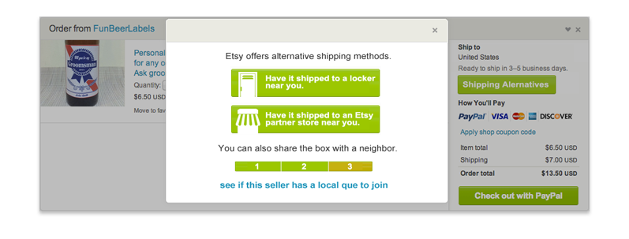
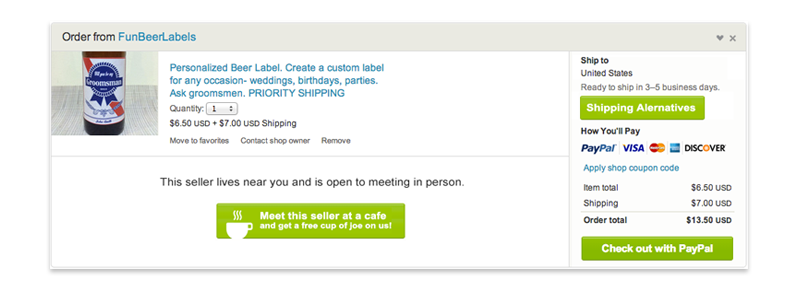

 <!DOCTYPE html>

<html>

<title>Jennings Hanna, Etsy Thesis Work Case Study</title>

<meta charset="utf8">

<meta name="viewport" content="width=device-width, initial-scale=1">

 <!-- CSS RESET ERIC MEYER
 <link rel="stylesheet" type="text/css" href="assets/reset.css" />
 -->
<link rel="shortcut icon" href="/favicon.ico" type="image/x-icon">
<link rel="icon" href="/favicon.ico" type="image/x-icon">
 
 <!-- Skeleton CSS -->
 <link rel="stylesheet" href="assets/skeleton/normalize.css">
 <link rel="stylesheet" href="assets/skeleton/skeleton.css">
 
 <!-- MY CSS -->
 <link rel="stylesheet" type="text/css" href="assets/style.css" />
 
 <!-- GOOGLE WEB FONT - @Open Sans@ Normal 400 -->
 <link href=@http://fonts.googleapis.com/css?family=Open+Sans@ rel=@stylesheet@ type=@text/css@>
 
  <!-- FONT AWESOME -->
 <link rel="stylesheet" href="https://maxcdn.bootstrapcdn.com/font-awesome/4.4.0/css/font-awesome.min.css">

</html>

<body >
	<div class="container top">
		<div class="row">
			<div class="twelve columns">
				
		<p class="color"><a href="index.html"></a>While working on my masters at the School of Visual Arts IxD Department I collaborated with my thesis advisor at <span class="name">Etsy</span> to design interactions for both buyers and sellers that would encourage reducing the carbon footprint of the platform. At the time Etsy was going public and evolving it's corporation status into a B-Corp&mdash; which delegates they report emissions and environmental impacts to the board and shareholders. And in order to set those goals it was important for the company to gather insights and iterate early stage ideas as to how users could reduce their carbon footprint.</p>
		
				
				
				<p class="color">Etsy is a wonderfully interesting new kind of company. It’s one that is fundamentally attached to the people that use their site. They’re nothing more than a middle man. What makes Etsy special is the massive amount of users and their passion for the site. As a testament to that, something like 1/4th of sellers also buy regularly. With that powerful community behind them the company has become the first publicly traded B-Corp worth nearly 1 billion dollars. What’s more interesting to me is that they encourage failure and give an award to the developer who takes the site down most in a month. They also compost everything in their office very delicately, and once a week have employees bike it to a local rooftop farm. Everything it seams, feeds into the B-Corp mission.</p>

				<p class="color">Etsy is successfully driving home a small, hand-made market online and making champions out of full-time makers and kitchen table businesses alike. Unfortunately, the models they have for moving goods are stagnant. It’s the usual players in transportation: trucks, trains, boats, and airplanes. All of which run predominantly off some kind of oil combustion. Which, just happens to be the largest contributor to Etsy’s carbon ratio. It’s almost obvious with the growth of platforms like Amazon that we’re more and more attached to having things shipped to us with the invention of the internet. Case in point is that Amazon was loosing money on Prime for the 1st two years due absorbed shipping cost. Our need to get things quickly isn’t going anywhere soon and shipping is rapidly excellarating in optimization and logistics.</p>

				<p class="color">Building on this research I focused on ideas that would generate more awareness for the users of the platform. I helped outlined solutions for specifically for Etsy's users asking “how might we extend the carbon footprint awareness as part of the buyer or seller experience in order to fulfill the B-Corp emissions goals?” In doing this I primarily focused on the experience through the lens of bringing users together to build stronger local networks and informing shoppers of added cost due to emissions of distance or production.</p>
				
				

				<p class="color">1. A shipping carbon score:</p>

				<p class="color">The first concept is simply an indication of a carbon score on the checkout page. Measuring from 1-10, bad to good. Based on how far a product would have to be shipped and how it might be shipped. Etsy told me that anything traveling over 400 miles is most likely going to catch a ride on an airplane. Airplanes, as you might suspect, are some of largest emissions polluters per parcel.</p>

				<p class="color">This idea has a core flaw: which is that it would mostly detract users from following through with the purchase. Or in other words, hang them up at the most important gateway in online commerce&mdash; the payment confirmation. No online store wants to impede efficiency at the point of sale.</p>

				<p class="color">Etsy’s feedback was that this could be useful as a modal. Say if there were a slider that the user could move from 1-10 that would change the shipping options as it moved. Truly a more delightful engagement encouraging the user to buy a thing they truly admire and want.</p>
				
				

				<p class="color">2. Source Map Integration</p>

				<p class="color">There is a great online application called SourceMap where anyone can go and set up a map of a supply chain. In this idea I proposed Etsy build a feature where the seller can share their SourceMap supply chain transparently with the Etsy community. SourceMap automatically calculates carbon cost by type of material, distance it will have to travel, and the most likely type of travel. The end result for sellers could be a meaningful exchange about increasing your SourceMap efficiency. I also encouraged them to give credits towards shipping for sellers using the program to increase reach and loyalty.</p>

				<p class="color">I should point out that there is already an initiative at Etsy that’s working with sellers to provide complete transparency in where they get their materials, the processes they use, and even the staffing of their operations. Since most sellers are individuals or small shops this is pretty simple and upfront information. But as those sellers products scale many of them have transformed into actual multi-employee small businesses. Having details about these businesses and how to optimize their supply chain will have a positive impact on Etsy’s B-Corp goals.</p>

				<p class="color">Etsys feedback was that it's a big-fish strategy and that many of the sellers on the platform (something like 40%) are soul proprietor businesses. They agreed though that having a tool for sellers to transparently follow resources cost could inspire better decision making. It definitely would be a valuable assumption to test.</p>

				

				<p class="color">3. Shop Local Search</p>

				<p class="color">One of the concepts, a local seller search function was already available on the Etsy prototypes page, but not commonly used by sellers. It allows a buyer to search out their location, then provides them with a list of events that local Etsy sellers frequent. It’s more of an event finder as it shows things like farmers markets. For instance, when I searched for my address in New York it brought up the infamous Brooklyn Flea (a huge flea market in Williamsburg every month) and sadly the listing only had a few vendors even though this market host hundred of craft vendors. The reason being though was because the tool was a prototype and the sellers have to apply it to their store. Hopefully one day as sellers discover this it will find its way to the Etsy platform.</p>

				

				<p class="color">In the use case above I am visualizing a search for hats and which hats could be bought locally. I also thought of this as a potential navigation element in which the user would see all kinds of products they might find around their location. Kind of the reverse of the search, like a sorting function specifically for products nearest to the users shipping address.</p>

				<p class="color">Etsys response to this idea was positive. They were aware of the prototype and thought of it as a good concept but lacked use and therefor validation. The primary concerns were that the high profile events were only regularly found in major cities and that sellers in smaller markets would be at a disadvantage. The other concern was only larger quantity sellers also sold at public markets and that those sellers could put their smaller market colleagues at a disadvantage.</p>

				

				<p class="color"><em>Shipping Alternatives: The following concepts focus solely on the shipping components of the Etsy platform.</em></p>

				<p class="color">4. Lockers</p>

				<p class="color">The concept is mostly one I brought up and was critiqued instead of built upon. Lockers are merely focused on ease of use for the consumer and not any sort of environmental impact it seams. The locker concept was created by Amazon and has been semi-successful in bigger urban areas but its success has been limited to that. It's kind of like a post office box for packages. Lockers do little or nothing to reduce carbon cost since the product shipped is still going to the locker. And if you're really nit picky, the buyer now has to take two trips to get their package out of the locker.</p>

				<p class="color">5. Partner Stores</p>

				<p class="color">Partner stores are an excellent example of an economic environment where the frameworks for building them already exist. It would simply allow a buyer to pick up their order from a store that carried that product in stock, locally. Though this still has the same issues as the lockers which is that it neither reduces cost from seller to store and again could add cost with the buyer making a round trip. Also, it adds a disadvantage to the small sellers as discussed above due to supply and demand quotas.</p>

				<p class="color">6. Sharing The Box</p>

				<p class="color">This concept is an attempt at a shipping method that would have a real world application and also help reverse the shipping emissions cost for buyers. Buyers enter a shipment queue and once the cue was fill with other buyers near them the package would be sent to one buyer collectively. Etsy would then inform all the buyers where and to whom the package was sent. One specified buyer would receive the package and the other buyers would be instructed to that buyers home to pick up their packages. Lastly, the buyer would have the option to set a length of time before the shared shipping would be dismissed and the product would be shipped in a traditional method.</p>

				<p class="color">Here is a diagram I created to assist in explaining the sharing the box interaction:</p>

				

				<p class="color">Etsy saw this as a triple win: the package has 3-5 times as much product in it — making for at least two less packages&mash; which means less packaging, and less shipping cost to all parties involved. Of course there were some concerns about timeliness of the overall deliveries and the legalities around asking customers to hold packages as a sort of small distribution center. I imagine though if it’s an opt-in solution that those concerns might be quickly mitigated.</p>

				<p class="color">7. Meet in Person</p>

				

				<p class="color">This is the final prototype and one that Etsy was excited the most about. I am not sure but it may be in the works. The concept is to use the buyers and sellers location to identify when they live close to one another. And when they do provide a link to the “Meet in Person” option shown above. A message would be sent to the seller that a buyer is open to meeting in person. For the seller this engagement can lead to social capital and potentially meeting champion customer. Or possibly another seller that’s buying. (Since a extraordinary percentage of Etsy seller are also buyers) this could be an opportunity to incubate community engagement and encourage collaborations. You never know when you might need something reupholstered or screen printed...</p>

				<p class="color">At the heart of this idea is that Easy would partner with a coffee shop or the like and offer discounts for sellers and buyers meeting in person. This aligns with the B-Corp goals and the focus of bringing people together. The buyer saves the entire cost of shipping and, as a bonus, meets the creator(s). Easy agreed that this solution provided both a complete reduction of carbon on the shipping and buyer side (other than the transportation to the coffee shop). The only limitation acknowledged was that the feature would only work well in areas of high density. Though the benefits definitely outweigh any risk of this causing a disadvantage.</p>

				<p class="color">Here is detailed diagram I created to assist in explaining the meet in person interaction:</p>

				

				<p class="color">This was a fantastic exercise for me to sharpen my focus on both carbon issues and how they affect shipping in the new online marketplace. It also helped me understand more fluidly some of the user needs of an e-commerce platform from both the buyer and seller perspective. As society continue to feel safer about buying things online the shipping cost will continue to increase in expense of both carbon and money. Solutions to help a digital commerce community deal with shipping are hard to create due to the limitations of processing the transaction of two strangers that could possibly be thousands of miles away. As Etsy continues with its mission I am excited to see how the platform sets the pace for the rest of the industry. I have no doubt after spending time with so many of their teams that they are doing just that.</p>

			</div>
		</div>
		<div class="row">
			<hr />
			<p class="color">More case studies:</p>
		</div>
		<div class="row portfolio-cards">
			<div class="four columns">
				<div class="card cornell">
					<p class="color"><a href="cornell.html">Meyer Cancer Center NYC</a></p>
				</div>
			</div>
			<div class="four columns">
				<div class="card spiral">
					<p class="color"><a href="spiral.html">Spiral NFL</a></p>
				</div>
			</div>
			<div class="four columns">
				<div class="card super-bowl">
					<p class="color"><a href="super-bowl.html">Super Bowl Bracket</a></p>
				</div>
			</div>
		</div>
	</div>
	
<script src="http://ajax.googleapis.com/ajax/libs/jquery/1.11.1/jquery.min.js"></script>
<script src="assets/js/jquery.animate-colors-min.js"></script>
<script src="assets/js/spectrum.js"></script>
<script src="assets/js/analytics.js"></script>

</body>